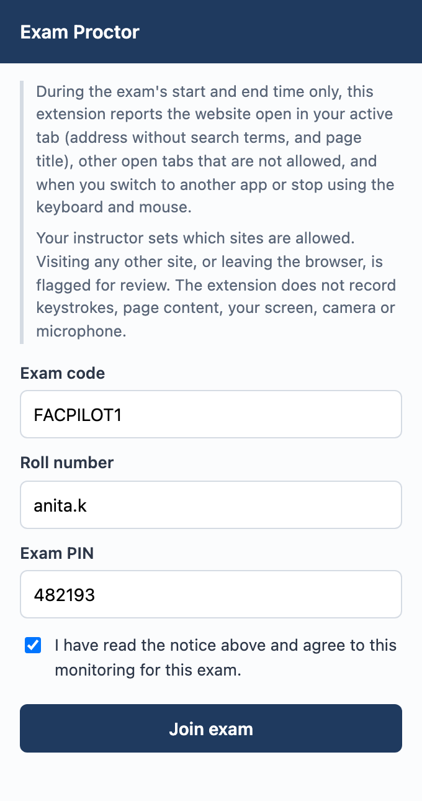
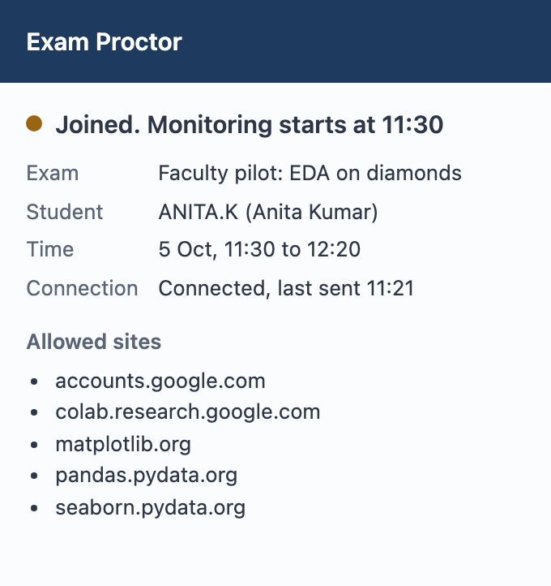
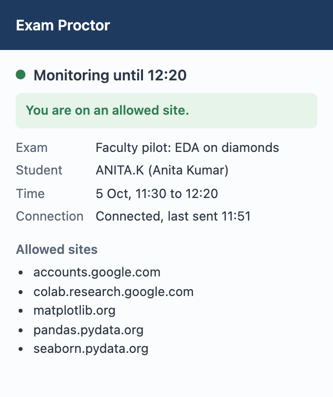
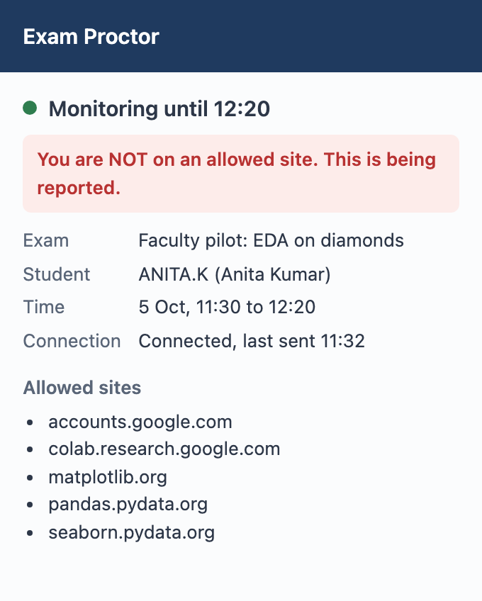
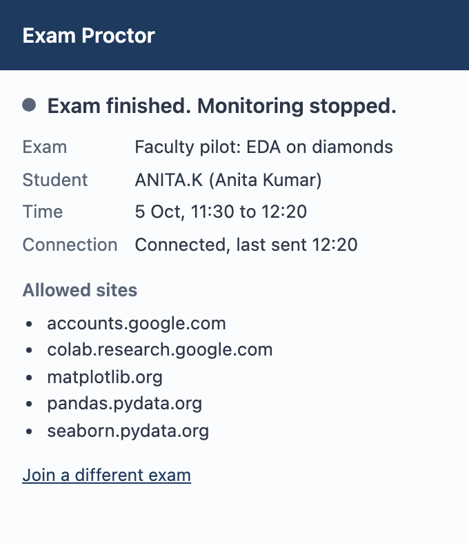

Exam Proctor: Participant Guide
Faculty pilot · Monday 5 October 2026 · 11:30 to 12:30 · Old IQAC
Thank you for taking part. For one hour you will sit a short mock exam as a "student", while a Chrome extension called Exam Proctor checks that you stay on the websites the exam allows. We are testing the tool, not you: nothing is graded.
| When | Monday 5 October 2026. Please arrive by 11:15. Monitoring runs 11:30 to 12:20, then feedback until 12:30. |
| Where | Old IQAC |
| Bring | Your laptop with Google Chrome, its charger, and your phone |
| Exam code | FACPILOT1 (capital letters, ending in the digit one) |
| Roll number | Your XIME email name, the part before @ (for example nikhildj) |
| Exam PIN | Shown on the screen at 11:20 |
| Before Monday | Install the extension (section 1, about 5 minutes) |
Pilot records are deleted within 30 days. Full privacy policy: exam-proctor-rhbo.onrender.com/privacy
https://chromewebstore.google.com/detail/jheooojginplgillkdegkhlgblcmoimdcolab.research.google.com once, to check that Colab opens. Signing in now means you will not need to sign in during the test.| Time | What happens |
|---|---|
| 11:15 | Arrive, connect to Wi-Fi, open Chrome and close the tabs you don't need |
| 11:20 | The PIN is shown on the screen. Join the exam (section 3) |
| 11:30 | Monitoring starts. Part A: system check, 7 minutes (section 5) |
| 11:38 | Part B: the mock exam, an analysis of the diamonds dataset in Google Colab (section 6) |
| 12:15 | Stop working; keep your notebook if you wish |
| 12:20 | Monitoring ends. Fill in the feedback form (its link is shown on the screen) |
| 12:20 to 12:30 | Open discussion: what worked, what didn't |

FACPILOT1.
The small label on the stopwatch icon shows how you are doing at a glance:
| Icon label | Meaning | What to do |
|---|---|---|
| ON | Monitoring is running and you are on an allowed site | Nothing. Carry on |
| ! | You are on a site that is not allowed, or outside Chrome | Go back to an allowed site straight away |
| No label | Monitoring is not running (before 11:30 or after 12:20) | Nothing |


When you open a site that is not allowed, a notification also appears: "This site is not allowed in this exam". If you switch to another app, it says "You left the exam browser". A visit shorter than 3 seconds, such as a mis-click you close at once, is not reported.
These four steps deliberately trigger each kind of warning, so we can check that the tool notices them. Follow the times; the organiser will also announce each step.
pandas.pydata.org and click around for a minute. You should see: the ON label.bbc.com/news in a new tab, wait about 10 seconds, then close that tab. You should see: a "not allowed" warning and the ! label, then ON again.youtube.com in a new tab, then click back to the pandas tab and leave YouTube open. At 11:37, close the YouTube tab.You will receive a printed question paper with 10 short questions on exploratory data analysis of the diamonds dataset, which is built into the seaborn library. Work in Google Colab.
colab.research.google.com and choose New notebook (or File → New notebook in Drive).colab.research.google.com: any notebookaccounts.google.com: Google sign-inpandas.pydata.org, seaborn.pydata.org, matplotlib.orgcolab.google, which now leads to Google's developer site. Type colab.research.google.com in full
You should see: "Exam finished. Monitoring stopped." The icon label disappears and nothing more is recorded.
| You see | What to do |
|---|---|
| "Cannot reach the exam server" | Check the Wi-Fi. The server may be waking up: wait one minute and try again. |
| "No exam with this code" | Check the code: FACPILOT1, capital letters, ending in the digit one. |
| "Incorrect exam PIN" | Re-type the PIN from the screen. |
| The ! label while you are on Colab | Check the address bar says colab.research.google.com. If it does, raise your hand. |
| Chrome crashed or the laptop restarted | Reopen Chrome, click the icon and join again with the same details. Nothing is lost. |
| The Wi-Fi drops | Carry on working. The extension saves everything and sends it when you reconnect. |
| Anything else | Raise your hand, or email nikhildj@xime.org |